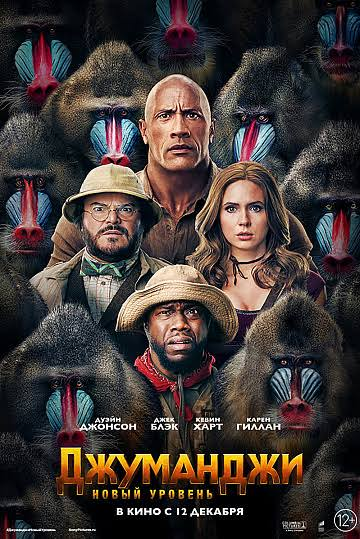

Джуманджи:Зов джунглей
«Джума́нджи» (англ. Jumanji) — американский фантастико-приключенческий художественный фильм 1995 года режиссёра Джо Джонстона по сценарию Джонатана Хенсли, Грега Тейлора и Джима Стрэйна на основе детской иллюстрированной книги 1981 года Криса Ван Оллсбурга. В нём снялись Робин Уильямс, Кирстен Данст, Дэвид Алан Грир, Бонни Хант, Джонатан Хайд и Биби Нойвирт. Сюжет разворачивается вокруг сверхъестественной настольной игры, которая с каждым ходом подстерегает игроков в опасностях, связанных с джунглями. Премьера «Джуманджи» состоялась 10 декабря 1995 года в Калвер-Сити, Калифорния, а в широкий прокат фильм вышел 15 декабря. Фильм получил неоднозначные отзывы критиков, но имел кассовый успех, собрав в мировом прокате 262,8 млн долларов при бюджете около 65 млн долларов. Это был десятый по счёту самый кассовый фильм 1995 года[1]. Фильм породил анимационный телесериал «Джуманджи», который транслировался с 1996 по 1999 год, а затем последовал идейный наследник фильма — «Затура: Космическое приключение» (2005) и два сиквела: «Джуманджи: Зов джунглей» (2017) и «Джуманджи: Новый уровень» (2019). В 1996 году компанией Milton Bradley Company была придумана и создана одноимённая настольная игра[2].

В 1996—1999 годах телевизионным каналом «UPN» был снят спин-офф в виде мультсериала «Джуманджи». В нём герои сериала попадают внутрь мира самой игры, где долгие годы находится Алан Пэрриш. 5 августа 2015 года студия «Sony Pictures Entertainment» объявила о выходе ремейка картины 25 декабря 2016 года[3], но в итоге вместо этого был снят сиквел «Джуманджи: Зов джунглей», премьера которого в российском прокате состоялась 21 декабря 2017 года. В отличие от оригинала, в продолжении Джуманджи стала игровой приставкой (она в неё превратилась в качестве ответа на отсутствие интереса со стороны очередного игрока), а герои, как и в мультсериале, попадают внутрь мира игры, при этом превращаясь в её персонажей. Связь с первым фильмом была осуществлена посредством флэшбеков и отсылок, а главным злодеем вновь стал Ван Пелт, но в исполнении нового актёра.